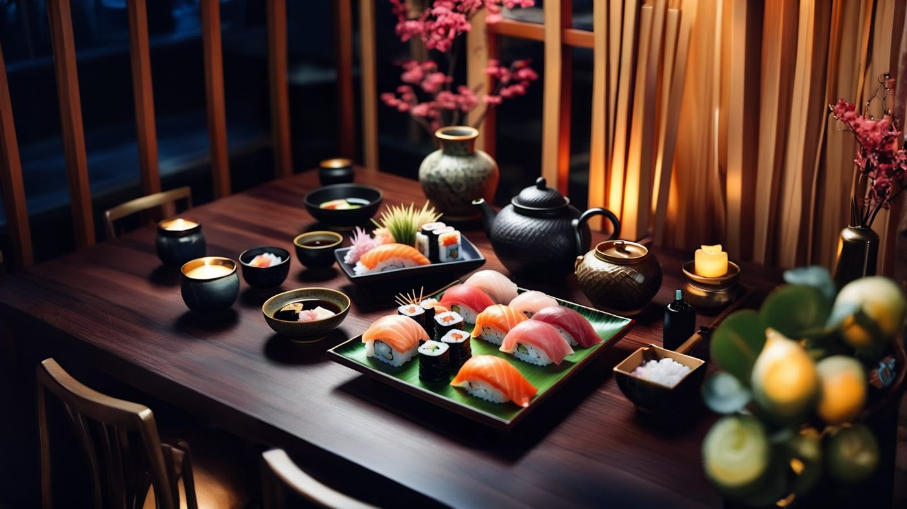
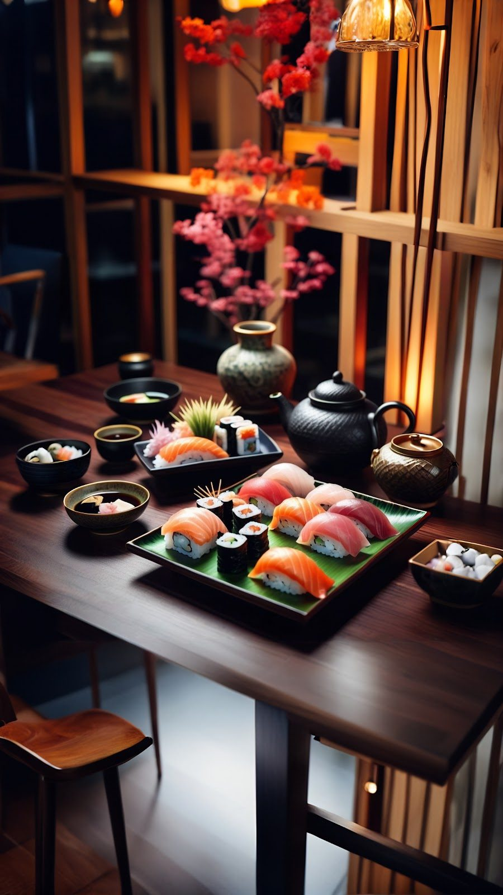
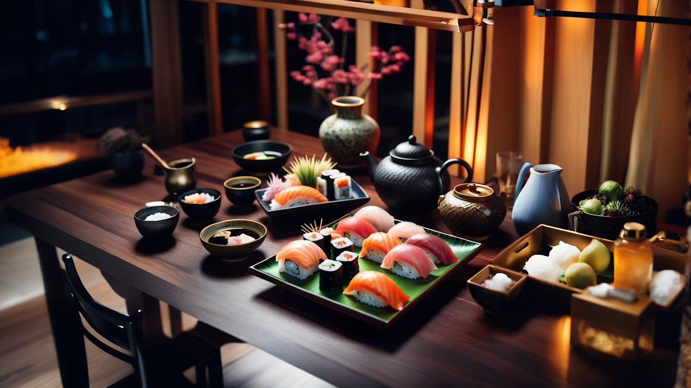
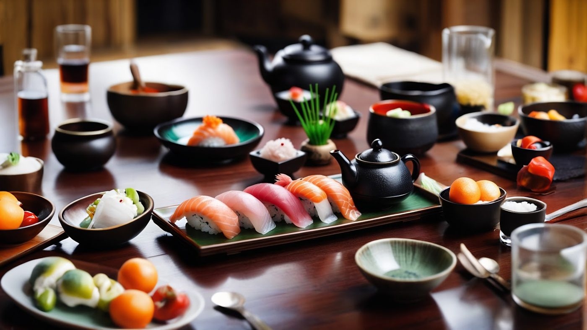
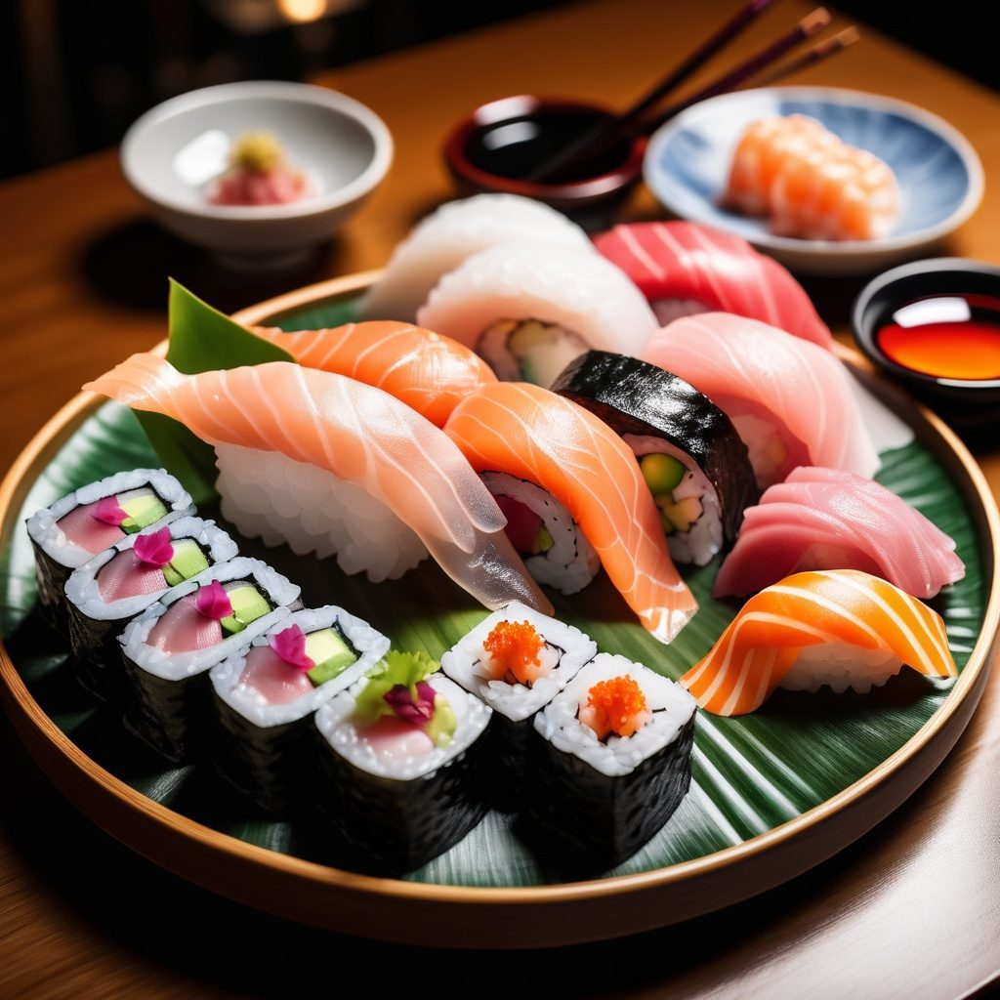

Food & Lifestyle Sushi
Sushi
*Due to NDAs, Can't use the actual name of the restaurant

Services
Lead Generation, Content Creation, Marketing Strategy, Analytics Reporting, A/B Testing, Email Marketing, Paid Media Management, & Social Media Advertising

I spearheaded a three-month campaign aimed at increasing exposure and driving reservations. The challenge was to capture the essence of luxury dining while standing out in a competitive market. By leveraging visually stunning content that highlighted the restaurant's signature dishes, such as the chef's selection of Nigiri, we showcased the artistry and sophistication behind each plate.

High-End Sushi
This multi-channel campaign—spanning YouTube, Google Ads, Meta Ads, X Ads, and Pinterest—successfully boosted the restaurant's visibility and led to a 23% increase in weekly reservations. The campaign not only elevated the brand but also attracted a refined clientele who valued both the cuisine and the dining experience.

Social Media Content
I developed an interactive social media strategy that encouraged patrons to engage with the brand in real-time. We placed QR codes on each table, allowing diners to easily share photos of their beautifully plated dishes and tag the restaurant on social media. This initiative not only amplified user-generated content but also sparked organic engagement across platforms like Instagram and Facebook. By incentivizing patrons to share their dining experiences, we created a buzz around the restaurant, boosting its online presence and further increasing weekly reservations. This strategy effectively blended fine dining with modern digital engagement.

Imagery Sells
I crafted an elegant and high-end visual campaign that showcased the artistry of their cuisine. By using stunning imagery to highlight the chef's selection of Nigiri and other signature dishes, I created a content strategy that resonated with the restaurant's upscale clientele. This visually rich campaign, promoted across YouTube, Google Ads, Meta Ads, X Ads, and Pinterest, led to a 23% increase in weekly reservations. The focus on luxury and refined presentation not only boosted exposure but also strengthened the restaurant's brand presence in a competitive market.
23% increase in weekly reservations
Want this kind of work on your brand?
If your brand should be working harder than it is, this is where it starts. One direct conversation.